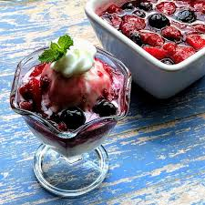

Warm Berry Compote

Description
A recipe for easy Warm Berry Compote
Original recipe
here
by cupcakeproject on
allrecipes.com
Ingredients
- Frozen mixed berries
- White sugar
- Orange juice
- Orange zest
- Cornstarch
- Water
Steps
- Stir frozen berries, sugar, orange juice, and orange zest together in a slow cooker. Cover and cook on High
until bubbling, about 1 1/2 hours.
- Stir cornstarch and water together in a cup until fully dissolved. Stir into berry mixture. Cover again and
cook until thickened, 5 to 10 minutes. Serve warm or at room temperature.